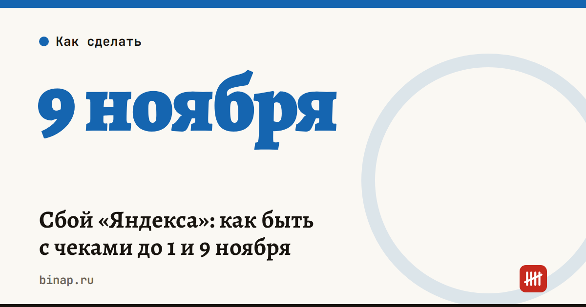

Сбой «Яндекса»: как быть с чеками до 1 и 9 ноября

Пока сервисы «Яндекса» не работают, чеки по оплатам через них могут не формироваться. ФНС объяснила, что делать, и назвала две даты.
Что это значит: - Чеки, которые не сформировались из-за сбоя, после восстановления сервисов будут сформированы как чеки коррекции (ч. 4 ст. 4.3 Закона № 54-ФЗ — по данным ФНС). - Самозанятым на платформах «Яндекса» чеки тоже сформируют после восстановления. До 1 ноября 2026 ФНС не рекомендует создавать их вручную в «Мой налог»: возможны дубли. - Если к 1 ноября чеки не пришли, доход можно отразить в «Мой налог» не позднее 9 ноября 2026. - Если вы не применили кассу из-за форс-мажора, это может стать объективной причиной для освобождения от административной ответственности (ст. 1.5 КоАП — по данным ФНС).
Что сделать сейчас: - Ведите журнал оплат через «Яндекс»: дата, сумма, клиент, номер заказа. Нужен, чтобы сверить его с чеками коррекции (совет редакции). - Самозанятым: не выписывайте чеки руками до 1 ноября; поставьте напоминания на 1 и 9 ноября. - Магазинам: после восстановления сервисов сверьте журнал с чеками коррекции и сохраните переписку со сбоем на случай вопросов. - Пример (расчёт редакции): у самозанятого за октябрь 12 оплат через платформу. Если к 1 ноября пришло 9 чеков, по трём оставшимся доход нужно отразить в «Мой налог» до 9 ноября.
Частые вопросы Нужно ли самозанятому сейчас выписывать чеки самому? По разъяснению ФНС, до 1 ноября 2026 не рекомендуется, чтобы не было дублей.
Что, если чеки так и не придут? Доход можно отразить в «Мой налог» не позднее 9 ноября 2026.